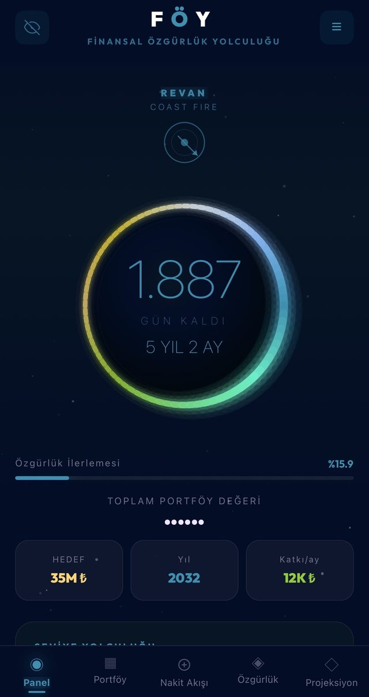
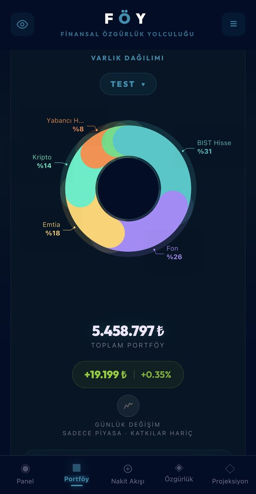
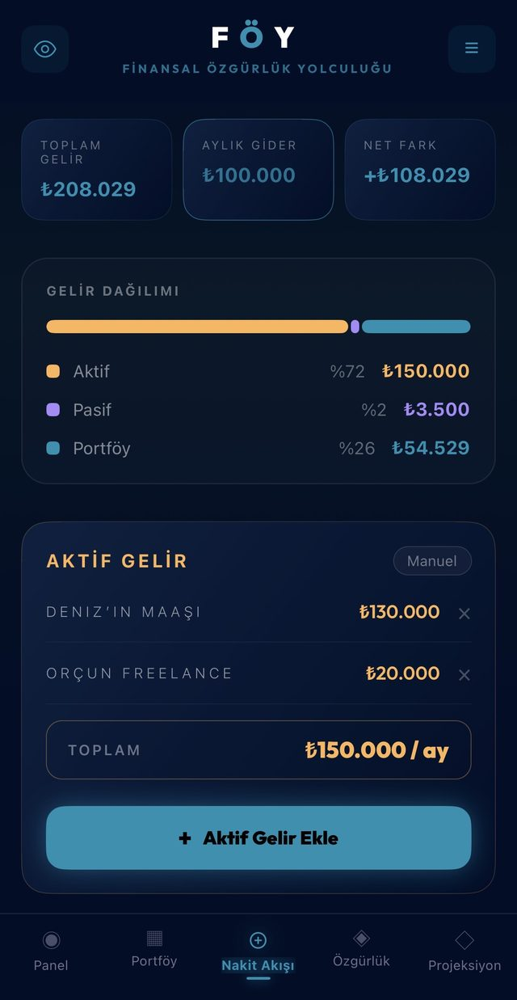
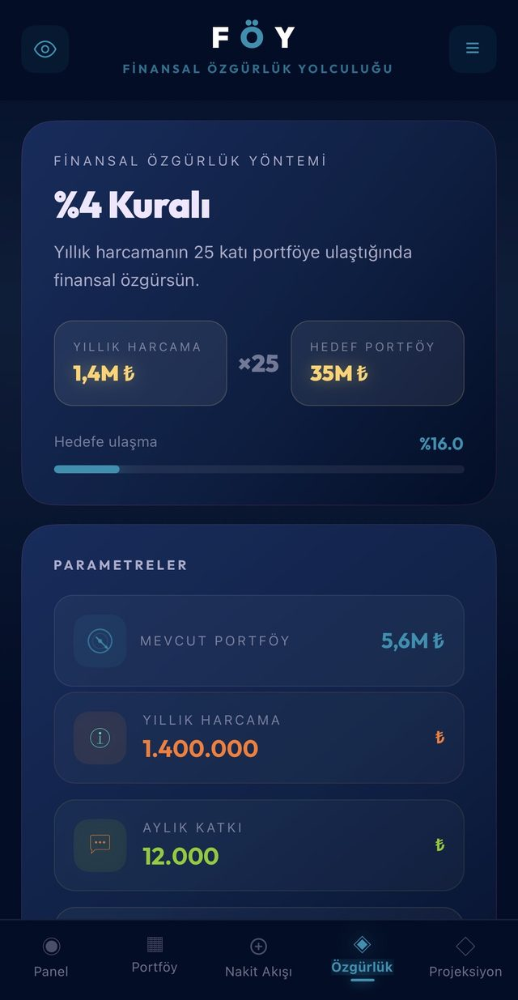
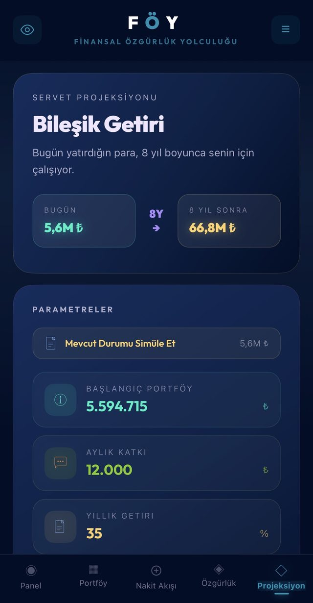

FÖY; gelirini, giderini ve tüm portföyünü tek yerde toplar. 4% kuralıyla finansal özgürlük hedefini hesaplar ve özgürlüğe kaç gün kaldığını gün gün gösterir.
Gelir bir yerde, yatırımlar başka yerde, hedef belirsiz olmasın. FÖY portföyünü, nakit akışını ve özgürlük hedefini tek çatı altında toplar; bileşik getiriyle geleceğini simüle eder ve özgürlüğe kaç gün kaldığını gösterir. Beş ekran, tek yolculuk.
Açılış ekranı seni rakam yığınıyla değil, hedefe kalan süreyle karşılar: özgürlük ilerlemen, ulaştığın seviye ve toplam portföyün tek bakışta.

BIST ve ABD hisseleri, fonlar, kripto, döviz, altın ve emtia. Piyasa açıkken güncellenen fiyatlar, ortalama maliyet, kâr/zarar ve günlük performans — hepsi tek ekranda.

Aktif geliri, pasif akışları ve saf portföy performansını ayrı izle. Pasif gelirin giderini karşıladıkça finansal bağımsızlık oranının büyüdüğünü gör; her kaynak ay ay arşivlenir.

Yıllık harcamanı gir; FÖY 25 katını alıp hedef portföyünü belirler ve hedefe ulaşma oranını gösterir. Parametreleri değiştir, hedefin nasıl şekillendiğini gör.

Bileşik getiriyle servet simülasyonu. Başlangıç portföyünü, aylık katkını ve yıllık getiri oranını ayarla; paranın zaman içinde nasıl katlandığını gör.

Her seviye, hedefine bir adım daha yakın. İlerledikçe yeni bir durağa ulaşırsın; bulunduğun nokta sayılarla değil, kat ettiğin mesafeyle anlam kazanır.
Farklı stratejiler, hedefler veya aile üyeleri için 5'e kadar bağımsız portföy yönet.
Finansal verilerin yalnızca cihazında saklanır. Hesap yok, bulut senkronu yok, portföyün cihazından çıkmaz.
Bordo ve Lacivert temalar. Arayüz Türkçe ve İngilizce.
Deneme süresince tüm özellikler açık. Sonrasında aylık ücret bir fincan kahve fiyatından daha az; istediğin an iptal edebilirsin.
Satın alma sitede yapılmaz. 30 günlük ücretsiz deneme ve abonelikler doğrudan uygulama içinde — App Store ve Google Play üzerinden — başlar, yönetilir ve istenildiği an iptal edilir.
Hayır. FÖY bir kişisel portföy ve finansal özgürlük takip aracıdır. Hangi varlığı alıp satacağına dair tavsiye, garanti veya getiri vaadi sunmaz. Tüm yatırım kararları tamamen sana aittir.
BIST ve ABD hisseleri, yatırım fonları (TEFAS), kripto paralar, altın, döviz ve emtia. Hepsini tek portföyde; piyasa saatlerinde güncellenen fiyat, ortalama maliyet, kâr/zarar ve günlük performansla görürsün.
Yıllık giderini girersin; FÖY 4% kuralıyla hedefini (Gider × 25) belirler, aylık katkın ve portföyünün gidişatına göre hedefe kalan süreyi gün gün hesaplar. Aynı hesabı uygulamayı kurmadan denemek istersen: Finansal Özgürlük Hesaplama aracı.
Finansal verilerin — portföyün, işlemlerin, gelir ve giderlerin — yalnızca senin cihazında saklanır. Hesap oluşturma yok, bulut senkronu yok; portföyün cihazından dışarı çıkmaz. Uygulamanın çökme kayıtları ve kimliksiz kullanım istatistikleri, hangi hatayı düzelteceğimizi görmek için toplanır; bunlar portföyünün içeriğini içermez. Ayrıntısı Gizlilik Politikası'nda.
FÖY hem iOS hem Android'de mevcut. App Store ve Google Play üzerinden indirebilirsin. Arayüz Türkçe ve İngilizce.
Tabloyu hemen bırakman gerekmiyor. Ücretsiz Portföy Takip Excel Şablonu'muzu indirip kullanabilirsin: maliyet, kâr/zarar ve portföy dağılımını kendisi hesaplar, kayıt istemez. Fiyatları elle güncellemek yormaya başladığında FÖY'e geçebilirsin.
30 gün ücretsiz. Tüm portföyün tek ekranda.
Üçü de ücretsiz, üçü de kayıt ve e-posta istemiyor. Excel şablonu maliyet, kâr/zarar ve portföy dağılımını kendisi hesaplar. Özgürlük hesaplayıcısı yıllık giderinden hedefini ve özgürlük yılını çıkarır. Bileşik getiri hesaplayıcısı katkı artışı ve enflasyon dahil yıl yıl gösterir.